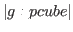

Subsections
The design of memory management scheme affects much to the flexibility and
efficiency of object-oriented languages.
EusLisp allocates memory to any sort of objects
in a unified manner based on the Fibonacci buddy method.
In this method, each of large memory pools called chunks is split into
small cells which are unequally sized but aligned at Fibonacci numbers.
A memory chunk is a homogeneous data container for any types of
objects such as symbol, cons, string, float-vector, etc.
as long as their sizes fit in the chunk.
A chunk has no special attributes,
like static, dynamic, relocatable, alternate, etc.
EusLisp's heap memory is the collection of chunks, and
the heap can extend dynamically by getting new chunks from UNIX.
The expansion occurs either automatically on the fly
or on user's explicit demand by calling system:alloc function.
When it is managed automatically, free memory size is kept
about 25% of total heap size. This ratio can be changed by setting a value between 0.1 and 0.9 to
the sys:*gc-margin* parameter.
When all the heap memory is exhausted, mark-and-sweep type garbage collection
runs.
Cells accessible from the root (packages, classes and stacks) remain at the
same place where they were.
Other inaccessible cells are reclaimed and linked to the free-lists.
No copying or compactification occurs during GC.
When a garbage cell is reclaimed, its neighbor is examined
whether it is also free,
and they are merged together to form a larger cell if possible.
This merging, however, is sometimes meaningless,
since cons, which is the most frequently called memory allocator,
requests the merged cell to be divided to the smallest cell.
Therefore, EusLisp allows to leave a particular amount of heap unmerged to speed up cons.
This ratio is determined by sys:*gc-merge* parameter,
which is set to 0.3 by default.
With the larger sys:*gc-merge*, the greater portion of heap is left unmerged.
This improves the performance of consing,
since buddy-cell splitting rarely occurs when conses are requested.
This is also true for every allocation of relatively small cells,
like three dimensional float-vectors.
SYS:GC invokes garbage collector explicitly, returning a list of two integers,
numbers of free words and total words (not bytes) allocated in the heap.
SYS:*GC-HOOK* is a variable to hold a function that is called upon the
completion of a GC. The hook function should receive two arguments
representing the sizes of the free heap and the total heap.
If "fatal error: stack overflow" is reported during execution,
and you are convinced that the error is not caused by a infinite loop
or recursion,
you can expand the size of the Lisp stack by sys:newstack.
reset should be performed before sys:newstack,
since it discards everything in the current stack such as
special bindings and clean-up forms of unwind-protect.
After a new stack is allocated, execution starts over from the point
of printing the opening message.
The default stack size is 65Kword.
The Lisp stack is different from the system stack.
The former is allocated in the heap, while the latter is allocated in
the stack segment by the operating system.
If you get "segmentation fault" error, it might be caused by the shortage
of the system stack.
You can increase the system stack size by the limit csh command.
Sys:reclaim and sys:reclaim-tree function put cells occupied by objects
back to the memory manager, so that they can be reused later without
invoking garbage collection.
You must be assured that there remains no reference to the cell.
memory-report and room function display statistics on
memory usage sorted by cell sizes and classes respectively.
address returns the byte address of the object and is useful
as a hash function when used with hash-table, since this address is
unique in the process.
Peek and poke are the functions to read/write data directly
from/to a memory location.
The type of access should be either of
:char, :byte, :short, :long, :integer, :float and :double.
For an instance, (SYS:PEEK (+ 2 (SYS:ADDRESS '(a b))) :short)
returns class id of a cons cell, normally 1.
There are several functions prefixed with 'list-all-'.
These functions returns the list of a system resource or environment,
and are useful for dynamic debugging.
sys:gc [function]
-
-
starts garbage collection, and returns a list of the numbers
of free words and total words allocated.
sys:*gc-hook* [variable]
-
-
Defines a function that is called upon the completion of a GC.
sys:gctime [function]
-
-
returns a list of three integers: the count of gc invoked,
the time elapsed for marking cells (in 1/60 sec. unit),
and the time elapsed for reclamation (unmarking and merging).
sys:alloc size [function]
-
-
allocates at least size words of memory in the heap,
and returns the number of words really allocated.
sys:newstack size [function]
-
-
relinquishes the current stack,
and allocates a new stack of size words.
sys:*gc-merge* [variable]
-
-
is a memory management parameter.
*gc-merge* is the ratio the ratio of heap memory which is
left unmerged at GC.
This unmerged area will soon filled with smallest cells whose size is
the same as a cons.
The default value is 0.3.
The larger values, like 0.4, which specifies 40% of free heap should be
unmerged, favors for consing but do harm to instantiating
bigger cells like float-vectors, edges, faces, etc.
sys:*gc-margin* [variable]
-
-
is a memory management parameter.
*gc-margin determines the ratio of
free heap size versus the total heap.
Memory is acquired from UNIX so that the free space does not go
below this ratio. The default value 0.25 means that 25% of free space is
maintained at every GC.
sys:reclaim object [function]
-
-
relinquishes object as a garbage.
It must be guaranteed that it is no longer referenced from any other objects.
sys:reclaim-tree object [function]
-
-
reclaims all the objects except symbols traversable from object.
sys:btrace num [function]
-
-
prints the back-trace information of num depth on the Lisp stack.
sys:memory-report &optional strm [function]
-
-
prints a table of memory usage report sorted by cell sizes
to the strm stream.
sys:room output-stream [function]
-
-
outputs memory allocation information ordered by classes.
sys:address object [function]
-
-
returns the address of object in the process memory space.
sys:peek [vector] address type [function]
-
-
reads data at the memory location specified by address
and returns it as an integer.
type is one of :char, :byte, :short, :long, :integer, :float,
and :double.
If no vector is given,
the address is taken in the unix's process space.
For example, since the a.out header is located at #x2000 on SunOS4,
(sys:peek #x2000 :short) returns the magic number (usually #o403).
Solaris2 locates the ELF header at #10000,
and (sys:peek #x10000 :long) returns #xff454c46 whose
string representation is "ELF".
If vector, which can be a foreign-string,
is specified, address is recognized as an offset
from the vector's origin.
(sys:peek "123456" 2 :short) returns short word
representation of "34", namely #x3334 (13108).
Be careful about the address alignment:
reading short, integer, long, float, double word
at odd address may cause bus error by most CPU architectures.
sys:poke value [vector] address value-type [function]
-
-
writes value at the location specified by address.
Special care should be taken since
you can write to anywhere in the process memory space.
Writing to outside the process space surely causes segmentation fault.
Writing short, integer, long, float, double word
at odd address causes bus error.
sys:list-all-chunks [function]
-
-
list up all allocated heap chunks. Not useful for other than the implementor.
sys:object-size obj [function]
-
-
counts the number of cells and words accessible from obj.
All the objects reference-able from obj are traversed,
and a list of three numbers is returned:
the number of cells,
the number of words logically allocated to these objects
(i.e. accessible from users),
and the number of words
physically allocated including headers and extra slots for memory management.
Traversing stops at symbols, i.e. objects referenced from a symbol such as
property-list or print-name string are not counted.
EusLisp assorts functions which directly correspond to
the system calls and library functions of UNIX operating system.
For further detail of these functions, consult UNIX system interface
reference (2).
These low-level functions defined in *unix-package* are sometimes dangerous.
Use higher level functions defined in other packages if possible.
For example, use IPC facilities described in the section 11.4
instead of unix:socket, unix:bind, unix:connect, and so on.
unix:ptimes [function]
-
-
a list of five elements, elapsed time, system time, user time,
subprocess's system time, subprocess's user time, is returned.
Unit is always one sixtieth second.
This function is obsolete and use of unix:getrusage is recommended.
unix:runtime [function]
-
-
Sum of the process's system and user time is returned.
Unit is 1/60 second.
unix:localtime [function]
-
-
Current time and date is returned in an integer vector.
Elements are second, minute, hour, day-of-a-month, month (zero-based), year (the number of years since 1900), weekday (the number of days since Sunday, in the range 0 to 6), day-in-the-year (the number of days since January 1, in the range 0 to 365), daylight-saving-time-is-set (a flag that indicates whether daylight saving time is in effect at the time described) and supported-time-zone.
ex.) unix:localtime => #(10 27 12 8 10 116 2 312 nil (``JST'' ``JST''))
unix:asctime tm_intvector [function]
-
-
Converts localtime represented with an integer-vector into a string notation.
(unix:asctime (unix:localtime)) returns a string representation of
the current real time.
unix:getpid [function]
-
-
returns the process id (16bit integer) of this process.
unix:getppid [function]
-
-
returns the process id of the parent process.
unix:getpgrp integer [function]
-
-
returns the process group id.
unix:setpgrp integer [function]
-
-
sets a new process group id.
unix:getuid [function]
-
- gets user id of this process.
unix:geteuid [function]
-
-
returns the effective user id of this process.
unix:getgid [function]
-
-
returns the group id of this process.
unix:getegid [function]
-
-
returns the effective group id of this process.
unix:setuid integer [function]
-
-
sets effective user id of this process.
unix:setgid integer [function]
-
-
sets the effective group id of this process.
unix:fork [function]
-
-
creates another EusLisp. 0 is returned to the subprocess and the pid of
the forked process is returned to the parent process.
Use system:piped-fork described in section 13.3
to make a process connected via pipes.
unix:vfork [function]
-
-
forks another EusLisp, and suspends the parent process from execution
until the new EusLisp process terminates.
unix:exec path [function]
-
-
replaces executing EusLisp with another program.
unix:wait [function]
-
-
waits for the completion of one of subprocesses.
unix:exit code [function]
-
-
terminates execution and returns code as its completion status.
Zero means normal termination.
sys:*exit-hook* [variable]
-
-
Defines a function that is called just before the process is exited.
unix:getpriority which who [function]
-
-
returns the highest priority (nice value) enjoyed by this process.
Which is one of 0(process), 1(process-group) or 2(user).
unix:setpriority which who priority [function]
-
-
sets priority
of the resource determined by which and who.
which is one of 0(process), 1(process-group) or 2(user).
who is interpreted relative to which
(a process identifier
for , process group identifier for ,
and a user ID for .
A zero value of who denotes
the current process, process group, or user.
To lower the priority (nice value) of your EusLisp process,
(unix:setpriority 0 0 10) will sets the nice value to 10.
Bigger nice value makes your process get less favored.
unix:getrusage who [function]
-
-
returns list of system resource usage information about who process.
Elements are ordered as follows:
More comprehensive display is obtained by lisp:rusage.
float ru_utime (sec.) /* user time used */
float ru_stime (sec.) /* system time used */
int ru_maxrss; /* maximum resident set size */
int ru_ixrss; /* currently 0 */
int ru_idrss; /* integral resident set size */
int ru_isrss; /* currently 0 */
int ru_minflt; /* page faults without physical I/O */
int ru_majflt; /* page faults with physical I/O */
int ru_nswap; /* number of swaps */
int ru_inblock; /* block input operations */
int ru_oublock; /* block output operations */
int ru_msgsnd; /* messages sent */
int ru_msgrcv; /* messages received */
int ru_nsignals; /* signals received */
int ru_nvcsw; /* voluntary context switches */
int ru_nivcsw; /* involuntary context switches */
unix:system [command] [function]
-
-
executes command in a sub shell.
command must be recognizable by Bourn-shell.
unix:getenv env-var [function]
-
-
gets the value for the environment variable env-var.
unix:putenv env [function]
-
-
adds env in the process's environment variable list.
env is a string which equates var to value
like "VARIABLE=value".
unix:sleep time [function]
-
-
suspends execution of this process for time seconds.
unix:usleep time [function]
-
-
suspends execution of this process for time micro-seconds
(u represents micro).
Usleep is not available on Solaris2 or other Sys5 based systems.
unix:uread stream [buffer] [size] [function]
-
-
reads size bytes from stream.
stream may either be a stream object or an integer representing fd.
If buffer is given, the input is stored there.
Otherwise, input goes to the buffer-string in stream.
Therefore, if stream is fd, buffer must be given.
unix:uread never allocates a new string buffer.
unix:uread returns the byte count actually read.
unix:write stream string &optional size [function]
-
-
writes size bytes of string to stream.
If size is omitted, the full length of string is output.
unix:fcntl stream command argument [function]
-
-
unix:ioctl stream command buffer [function]
-
-
unix:ioctl_ stream command1 command2 [function]
-
-
unix:ioctl_R stream command1 command2 buffer [size] [function]
-
-
unix:ioctl_W stream command1 command2 buffer [size] [function]
-
-
unix:ioctl_WR stream command1 command2 buffer [size] [function]
-
-
unix:close fd [function]
-
-
close a file specifying its file descriptor fd.
unix:dup fd [function]
-
-
returns the duplicated file descriptor for fd.
unix:pipe [function]
-
- creates a pipe.
An io-stream for this pipe is returned.
unix:lseek stream position [whence 0] [function]
-
-
sets the file pointer for stream at position counted
from whence.
unix:link path1 path2 [function]
-
- makes a hard link.
unix:unlink path [function]
-
- removes a hard link to the file specified by path.
If no reference to the file lefts, it is deleted.
unix:mknod path mode [function]
-
- makes inode in a file system.
path must be a string, not a pathname object.
unix:mkdir path mode [function]
-
- makes directory in a file system.
path must be a string, not a pathname object.
unix:access path mode [function]
-
-
checks the access rights to path.
unix:stat path [function]
-
-
gets inode information of path and
returns a list of integers described below.
st_ctime ; file last status change time
st_mtime ; file last modify time
st_atime ; file last access time
st_size ; total size of file, in bytes
st_gid ; group ID of owne
st_uid ; user ID of owner
st_nlink ; number of hard links to the file
st_rdev ; the device identifier (special files only)
st_dev ; device file resides on
st_ino ; the file serial number
st_mode ; file mode
unix:chdir path [function]
-
- changes the current working directory to path.
unix:getwd [function]
-
- gets current working directory.
unix:chmod path integer [function]
-
-
changes access mode (permission) for path.
unix:chown path integer [function]
-
-
changes the owner of the file path.
unix:isatty (stream  fd) [function]
fd) [function]
-
-
returns T if stream is connected to a tty-type
device (a serial port or a pseudo tty) .
unix:msgget key mode [function]
-
-
creates or allocates a message queue which is addressed by key.
unix:msgsnd qid buf [mtype [flag]] [function]
-
-
unix:msgrcv qid buf [size [mtype [flag]]] [function]
-
-
unix:socket domain type &optional proto [function]
-
- creates a socket
whose name is defined in domain and whose abstract type is type.
type should be one of 1 (SOCK_STREAM),
2 (SOCK_DGRAM), 3 (SOCK_RAW), 4 (SOCK_RDM) and 5 (SOCK_SEQPACKET).
unix:bind socket name [function]
-
-
associates name to socket.
name should be a unix path-name if the socket is defined in unix-domain.
unix:connect socket addr [function]
-
-
connects socket to another socket specified by addr.
unix:listen socket &optional backlog [function]
-
-
begins to accept connection request on socket.
backlog specifies the length of the queue waiting for the establishment
of connection.
unix:accept socket [function]
-
- accepts the connection request on socket
and returns a file-descriptor on which messages can be exchanged
bidirectionally.
unix:recvfrom socket &optional mesg from flag [function]
-
-
receives a datagram message from socket.
The socket must be assigned a name by unix:bind.
mesg is a string in which the incoming message will be stored.
If mesg is given, recvfrom returns the number of bytes received.
If it is omitted, a new string is created for the storage of the message
and returned.
unix:sendto socket addr mesg &optional len flag [function]
-
-
sends a datagram message to another socket specified by addr.
Socket must be a datagram-type socket which has no name assigned.
Mesg is a string to be sent and len is the length of
the message counting from the beginning of the string.
If omitted, whole string is sent.
unix:getservbyname servicename [function]
-
-
returns the service number (integer) for servicename registered
in /etc/services or in NIS database.
unix:gethostbyname hostname [function]
-
-
returns the list of ip address of hostname and its address type
(currently always AF_INET==2).
unix:syserrlist errno [function]
-
-
returns a string describing the error information for the error code
errno.
unix:signal signal func [option] [function]
-
-
installs the signal handler func for signal.
In BSD4.2 systems, signals caught during system call processing
cause the system call to be retried.
This means that if the process is issuing a read system call,
signals are ignored.
If option=2 is specified,
signals are handled in the system-5 manner,
which causes the system call to fail.
unix:kill pid signal [function]
-
-
sends a signal to a process named by pid.
unix:pause [function]
-
-
suspends execution of this process until a signal arrives.
unix:alarm time [function]
-
-
sends an alarm clock signal (SIGALRM 14) after time seconds.
Calling unix:alarm with time=0 resets the alarm clock.
unix:ualarm time [function]
-
-
same as unix:alarm except that the unit of time is micro seconds.
ualarm is not available on Solaris2 or on other Sys5 based systems.
unix:getitimer timer [function]
-
-
One Unix process is attached with three interval timers, i.e.,
a real-time timer that decrements as the real time passes,
a virtual-timer that decrements as the process executes in the user space,
and a prof-timer that decrements as the kernel executes on behalf of
the user process.
timer is either 0 (ITIMER_REAL), 1 (ITIMER_VIRTUAL),
or 2(ITIMER_PROF).
A list of two elements is returned, the value of the timer in second
and the interval. Both are floating-point numbers.
unix:setitimer timer value interval [function]
-
-
sets value and interval in timer.
timer is eiterh 0 (ITIMER_REAL), 1 (ITIMER_VIRTUAL),
or 2(ITIMER_PROF).
ITIMER_REAL delivers SIGALRM when value expires.
ITIMER_VIRTUAL delivers SIGVTALRM, and
ITIMER_PROF delivers SIGPROF.
unix:select inlist outlist exceptlist timeout [function]
-
-
inlist, outlist and exceptlist are bitvectors
indicating file descriptors whose I/O events should be tested.
For example, if inlist=#b0110, outlist=#b100,
and exceptlist=NIL,
then whether it is possible to read on fd=1 or 2, or to write on fd=2
is tested.
Timeout specifies seconds for which select is allowed to
wait.
Immediately after
incoming data appear on one of the ports specified in inlist,
or writing become available on one of the ports specified in outlist,
or exceptional condition arises in one of the ports specified in
exceptlist,
select returns the number of ports that are available for I/O
operation, setting ones for the possible port s
in each of inlist, outlist and exceptlist.
unix:select-read-fd read-fdset timeout [function]
-
-
I/O selection is usually meaningful only for input operation.
unix:select-read-fd is a short-hand for
select fdset nil nil timeout.
Read-fdset is not a bit-vector,
but an integer that specifies the reading fd set.
There is no way to create bound threads. Therefore only one signal stack
and one interval timer are available in a EusLisp process.
On Solaris2, the main top-level runs in a separated thread.
unix:thr-self [function]
-
- returns the id (integer) of the thread currently
running.
unix:thr-getprio id [function]
-
- returns the execution priority of the thread
specified by id.
unix:thr-setprio id newprio [function]
-
- sets the execution priority of
the thread specified by id to newprio.
The smaller numerical value of newprio means the higher priority.
In other words,
a thread with a numerically greater newprio gets less access to CPU.
Users cannot raise the execution priority higher than
the process's nice value, which is usually 0.
unix:thr-getconcurrency [function]
-
-
returns the concurrency value (integer) which represents the number
of threads that can run concurrently.
unix:thr-setconcurrency concurrency [function]
-
-
The concurrency value is the number of LWP in the process.
If the concurrency is 1, which is the default, many threads you created
are assigned to one LWP in turn even though all of them are runnable.
If the program is running on a multi-processor machine and you want
to utilize more than one CPU at the same time,
you should set a value bigger than one to concurrency.
Note that a big concurrency value let the operating system consume
more resource. Usually concurrency should be smaller than or
equal to the number of processors.
unix:thr-create func arg-list &optional (size 64*1024) [function]
-
-
creates a new thread with size words of Lisp stack and
size bytes of C stack,
and let it apply func to arg-list.
The thread cannot return any results to the caller.
Use of this function is discouraged.
unix:malloc integer [function]
-
-
allocates memory outside EusLisp memory space.
unix:free integer [function]
-
-
deallocates a memory block allocated by unix:malloc.
unix:valloc integer [function]
-
-
unix:mmap address length protection share stream offset [function]
-
-
unix:munmap address length [function]
-
-
unix:vadvise integer [function]
-
-
Although Unix controls terminal device by a set of commands (second argument) to
ioctl, EusLisp provides them in the forms of function to eliminate
to reference the include files and or'ing argument with the command codes.
For the detail, refer to the termio manual pages of Unix.
There are two sets of terminal io-controls: TIOC* and TC*.
Be careful about the availability of these functions on your operating system.
Basically, BSD supports TIOC* io-controls and Sys5 supports TC*.
- SunOS 4.1 Both TIOC* and TC*
- Solaris2 only TC*
- mips, ultrix? only TIOC*
unix:tiocgetp stream [sgttybuf] [function]
-
- gets parameters.
unix:tiocsetp stream sgttybuf [function]
-
- sets parameters.
unix:tiocsetn stream [sgttybuf] [function]
-
-
unix:tiocgetd stream [sgttybuf] [function]
-
-
unix:tiocflush stream [function]
-
- flushes output buffer
unix:tiocgpgrp stream integer [function]
-
- gets process group id.
unix:tiocspgrp stream integer [function]
-
- sets process group id.
unix:tiocoutq stream integer [function]
-
-
unix:fionread stream integer [function]
-
-
unix:tiocsetc stream buf [function]
-
-
unix:tioclbis stream buf [function]
-
-
unix:tioclbic stream buf [function]
-
-
unix:tioclset stream buf [function]
-
-
unix:tioclget stream buf [function]
-
-
unix:tcseta stream buffer [function]
-
- sets terminal parameters immediately.
unix:tcsets stream buffer [function]
-
- sets terminal parameters.
unix:tcsetsw stream buffer [function]
-
- sets terminal parameters after all
characters queued for output have been transmitted.
unix:tcsetsf stream buffer [function]
-
- sets terminal parameters after all
characters queued for output have been transmitted and all characters
queued for input are discarded.
unix:tiocsetc stream buffer [function]
-
-
unix:tcsetaf stream buffer [function]
-
-
unix:tcsetaw stream buffer [function]
-
-
unix:tcgeta stream buffer [function]
-
-
unix:tcgets stream buffer [function]
-
-
unix:tcgetattr stream buffer [function]
-
-
unix:tcsetattr stream buffer [function]
-
-
Recent Unix provides with the dbm or ndbm library
for the management of keyed index files.
Making use of this library, you can build a data base that is composed
of many pairs of key and datum association.
Following functions are defined in clib/ndbm.c.
On Sun, it should be compiled by cc -c -Dsun4 -Bstatic,
and loaded into EusLisp by (load "clib/ndbm" :ld-option "-lc").
dbm-open dbname mode flag [function]
-
-
Dbm-open must be called first to create a data base file,
and to begin read/write operations to the data base.
Dbname is the name of the data base.
Actually, ndbm manager creates two files which have suffixes ".pag"
and ".dir".
Mode specifies file-open mode; 0 for read-only access, 1 for write-only,
and 2 for read-write; also #x200 should be ored when you create
the file at the first time.
Flag gives access permission that is changed by chmod.
#o666 or #o664 is good for flag.
Dbm-open returns an integer that identifies the data base in the process.
This value is used by other dbm functions to identify the data base.
In other words, you can open several data bases at the same time.
dbm-store db key datum mode [function]
-
-
stores key-datum association in db.
Db is an integer to identify the data base.
Key and datum are strings.
Mode is 0 (insert) or 1 (replace).
dbm-fetch db key [function]
-
-
retrieves datum that is associated with key in db.
Unix Processes
In order to launch unix commands from EusLisp,
use the unix:system function.
Piped-fork creates a subprocess whose standard input and standard output
are connected to EusLisp's bidirectional stream through pipes.
Piped-fork returns the stream.
Following is a function to count the number of lines contained in a file
by using "wc".
(defun count-lines (file) (read (piped-fork "wc" file)))
The next example creates eus process on another workstation identified by "etlic0"
and provides a port for distributed computation.
(setq ic0eus (piped-fork "rsh" "etlic0" "eus"))
(format ic0eus "(list 1 2 3)~%")
(read ic0eus) --> (1 2 3)
For source code editing, you can call ez from the EusLisp.
The screen editor ez communicates with EusLisp through message-queues.
If you have an ez process already running in parallel with the EusLisp,
ez restarts ez and it gains the terminal control.
By issuing esc-P or esc-M commands in ez,
texts are sent back and evaluated by EusLisp.
This is useful for the debugging since entire file does not need to be
loaded when you add a little modification to the file.
Similar function is available on emacs by M-X run-lisp command.
cd &optional (dir (unix:getenv "HOME")) [function]
-
-
changes the current working directory.
ez &optional key [function]
-
-
enters display editor ez, and reads Lisp forms from it, and evaluates
them.
piped-fork &optional (exec) &rest args [function]
-
-
forks a process, and makes a two-way stream between the current EusLisp and the
subprocess. Exec is the file name of a unix command and args are arguments
to the command. If exec (string) includes one or more space, it is
assumed a shell command, and executed by /bin/sh calling the unix:system function.
If no exec is given, another euslisp is created as the subprocess.
xfork exec &key (stdin *standard-input*) (stdout *standard-output*)
(stderr *error-output*) (args nil) [function]
-
-
forks a process, replaces its stdin, stdout, and stderr streams to specified ones,
and exec's "exec" with the args arguments.
piped-fork is roughly equivalent to
(xfork exec :stdin (unix:pipe) :stdout (unix:pipe))
Though xfork returns an io-stream to stdin and stdout with their
directions reversed,
it is not always useful unless they are pipes.
The name of this function, xfork (cross-fork), comes from this reversed io-stream,
namely, the io-stream's input comes from the stdout of the subprocess and the output
comes from the stdin.
rusage [function]
-
- prints resource usage of this process.
Programs that heavily refer to C include files or frequently access arrays
perform better or are more clearly described
if written in C or other languages rather than in EusLisp.
EusLisp provides the way to link programs coded in C.
If you want to define EusLisp function written in C,
each EusLisp-callable C-function must be coded to accept three arguments:
the context pointer, the number of arguments and the pointer to the Lisp
argument block.
These arguments must be named as ctx, n and argv,
since the macros in c/eus.h assume these names.
The C program must include *eusdir*/c/eus.h.
The programmer should be familiar with the types and macros
described there.
The entry function should be named by the basename of the source file.
A sample code for C function AVERAGE which computes the arithmetic
average of arbitrary number of floats is shown below.
In this example, you can see how to get float values from arguments,
how to make the pointer of a float,
how to set a pointer in the special variable AVERAGE,
and how to define a function and a symbol in the entry function ave.
Compile this program by 'cc -c -Dsun4 -DSolaris2 -K pic'.
-Dsun4 and -DSolaris2 are needed
to chose proper definitions in c/eus.h.
-K pic is needed to let the c compiler generate position independent
code necessary for the loadable shared object.
Then the resulted '.o' file can be loaded into EusLisp.
More complete examples can be found in *eusdir*/clib/*.c,
which are defined and loaded in the same manner described here.
/* ave.c */
/* (average &rest numbers) */
#include "/usr/local/eus/c/eus.h"
static pointer AVESYM;
pointer AVERAGE(ctx,n,argv)
context *ctx;
int n;
pointer argv[];
{ register int i;
float sum=0.0, a, av;
pointer result;
numunion nu;
for (i=0; i<n; i++) {
a=ckfltval(argv[i]);
sum += a;} /*get floating value from args*/
av=sum/n;
result=makeflt(av);
AVESYM->c.sym.speval=result; /*kindly set the result in symbol*/
return(result);}
ave(ctx,n,argv)
context *ctx;
int n;
pointer argv[];
{ char *p;
p="AVERAGE";
defun(ctx,p,argv[0],AVERAGE);
AVESYM=intern(ctx,p,strlen(p),userpkg); /* make a new symbol*/
}
Functions written in C without concern about linking with EusLisp
can be loaded onto EusLisp, too.
These functions are called foreign functions.
Such programs are loaded by
load-foreign macro which returns an instance of foreign-module.
External symbol definitions in the object file is registered
in the module object.
Defforeign is used to make entries to C functions
to be called from EusLisp.
Defun-c-callable defines lisp functions callable from C.
C-callable functions have special code piece called pod-code
for converting parameters and transferring control to the corresponding
EusLisp function.
Pod-address returns the address of this code piece which
should be informed to C functions.
Here is an example of C program and its interface functions to EusLisp.
/* C program named cfunc.c*/
static int (*g)(); /* variable to store Lisp function entry */
double sync(x)
double x;
{ extern double sin();
return(sin(x)/x);}
char *upperstring(s)
char *s;
{ char *ss=s;
while (*s) { if (islower(*s)) *s=toupper(*s); s++;}
return(ss);}
int setlfunc(f) /* remember the argument in g just to see */
int (*f)(); /* how Lisp function can be called from C */
{ g=f;}
int callfunc(x) /* apply the Lisp function saved in g to the arg.*/
int x;
{ return((*g)(x));}
;;;; Example program for EusLisp's foreign language interface
;;;; make foreign-module
(setq m (load-foreign "cfunc.o"))
;; define foreign functions so that they can be callable from lisp
(defforeign sync m "sync" (:float) :float)
(defforeign toupper m "upperstring" (:string) :string)
(defforeign setlfunc m "setlfunc" (:integer) :integer)
(defforeign callfunc m "callfunc" (:integer) :integer)
;; call them
(sync 1.0) --> 0.841471
(print (toupper "abc123")) --> "ABC123"
;; define a test function which is callable from C.
(defun-c-callable TEST ((a :integer)) :integer
(format t "TEST is called, arg=~s~%" a)
(* a a)) ;; return the square of the arg
;; call it from C
;;setlfunc remembers the entry address of Lisp TEST function.
(setlfunc (pod-address (intern "TEST")))
(callfunc 12) --> TEST is called, arg=12 144
Data representations in EusLisp are converted to those of C in the following
manners:
EusLisp's 30-bits integer (including character)
is sign-extended and passed to a C function via stack.
30-bit float is extended to double and passed via stack.
As for string, integer-vector and float-vector,
only the address of the first element is passed on the stack,
and the entire array remains uncopied.
The string can either be a normal string or a foreign-string.
A string may contain null codes, though it is guaranteed
that the string also has a null code at the end.
EusLisp does not know how to pass arrays of more than one dimension.
Every array of more than one dimension has correspoiding one dimensional
vector that holds the entire elements linearly.
This vector is obtained by the array-entity macro.
Also, note that a two-dimensional matrix should be transposed
if it is sent to the FORTRAN subroutines, since rows and columns
are ordered oppositely in FORTRAN.
Since EusLisp's representation of floating-point numbers is always single
precision, conversion is required when you pass a vector of double precision
floating point numbers.
For this purpose, the conversion functions,
double2float and float2double are provided
by clib/double.c.
For an instance, if you have a 3x3 float-matrix and want to pass it to a C
function named cfun as a matrix of double, use the following forms.
(setq mat (make-matrix 3 3))
(cfun (float2double (array-entity mat)))
Struct in C can be defined by the defcstruct macro.
Defcstruct accepts struct-name followed by
field definition forms.
(defcstruct <struct-name>
{(<field> <type> [*] [size])}*)
For example, following struct definition is represented by the next defcstruct.
/* C definition */
struct example {
char a[2];
short b;
long *c;
float *d[2];};
/* equivalent EusLisp definition */
(defcstruct example
(a :char 2)
(b :short)
(c :long *)
(d :float * 2))
load-foreign objfile &key symbol-input symbol-output (symbol-file objfile) ld-option) [macro]
-
- loads an object module written in languages other than EusLisp.
In Solaris2, load-foreign just calls load with a null string
as its :entry parameter.
A compiled-code object is returned.
This result is necessary to make entries to the functions in the module by
defforeign called later on.
Libraries can be specified in ld-option.
However, the symbols defined in the libraries cannot be captured
in the default symbol-output file.
In order to allow EusLisp to call functions defined in the libraries,
symbol-output and symbol-file must be given explicitly.
(These arguments are not needed if you are not going to call the library
functions directly from EusLisp, i.e. if you are referring them only from
functions in objfile).
Load-foreign links objfile with libraries specified and global
symbols in EusLisp which is in core, and writes the linked object in
symbol-output.
Then, symbols in symbol-file are searched and listed in the
foreign-module. Since symbol-file is defaulted to be objfile,
only the symbols defined in objfile are recognized if symbol-file
is not given. To find all the global entries both in objfile and
libraries, the linked (merged) symbol table resulted from the first link
process of load-foreign must be examined.
For this reason, an identical file name must be given both to symbol-output
and to symbol-file.
As shown below, the intermediate symbol file can be removed
by unix:unlink.
However, if you are loading more than one foreign modules both of which
refer to the same library, and if you want to avoid loading
the library duplicatedly, you have to use symbol-input argument.
Suppose you have loaded all the functions in "linpack.a" in the above
example and you are going to load another file "linapp.o" that calls functions
in "linpack.a".
The following call of load-foreign should be issued before you
unlink "euslinpack".
(load-foreign "linapp.o" :symbol-input "euslinpack")
See *eusdir*/llib/linpack.l for more complete examples of
load-foreign and defforeign.
(setq linpack-module
(load-foreign "/usr/local/eus/clib/linpackref.o"
:ld-option "-L/usr/local/lib -llinpack -lF77 -lm -lc"
:symbol-output "euslinpack"
:symbol-file "euslinpack"
))
(unix:unlink "euslinpack")
defforeign funcname module cname paramspec resulttype [macro]
-
-
makes a function entry in a foreign language module.
funcname is a symbol to be created in EusLisp.
module is a compiled-code object returned by load-foreign.
cname is the name of the C-function defined in the foreign program.
It is a string like "_myfunc".
paramspec is a list of parameter type specifications
which is used for the data type conversion and coercion when arguments are
passed from EusLisp to the C function.
Paramspec can be NIL if no data conversion or type check is required.
One of :integer, :float , :string, or (:string n) must be
given to resulttype.
:Integer means that the c function returns either char, short or
int (long).
:Float should be specified both for float and double.
:String means the C function returns a pointer to a string,
and EusLisp should add a long-word header to the string to accomodate it
as a EusLisp string.
The length of the string is found by strlen.
Note that the writing a header just before the string may cause
a disastrous result.
On the other hand, (:string n) is safer but slower because
a EusLisp string of length n is newly created and the contents of
C string is copied there.
(:string 4) should be used for a C function that returns a pointer
to an integer. The resulted integer value of the result can be obtained by
(sys:peek result :long), where result is a variable set to the
result of the C function.
You may also specify (:foreign-string [n]) for C functions
that return a string or a struct.
The result is a foreign-string whose content is held somewhere outside
EusLisp control.
If the result string is null-terminated and the length of the string
is known by strlen, you don't need to specify the length [n].
However, if the result contains null codes, which is usual for structs,
the length of the foreign-string should be explicitly given.
Whether you should use (:string n) or (:foreign-string n) is not
only the matter of speed, but the matter of structure sharing.
The difference is whether the result is copied or not.
Fortran users should note that every argument to a Fortran function or a
subroutine is passed by call-by-reference.
Therefore, even a simple integer or float type argument must be put
in a integer-vector or a float-vector before it is passed to Fortran.
defun-c-callable funcname paramspec resulttype . body [macro]
-
-
defines a EusLisp function that can be called from foreign language code.
funcname is a symbol for which a EusLisp function is defined.
paramspec is a list of type specifiers as in defforeign.
Unlike defforeign's paramspec, defun-c-callable's paramspec
cannot be omitted unless the function does not receive any argument.
:integer should be used for all of int, short and char types
and :float for both of float and double.
resulttype is the type of the Lisp function.
resulttype can be omitted unless you need type check or type coercion from integer
to float.
body is lisp expressions that are executed when this function is
called from C.
The function defined by defun-c-callable can be called from Lisp
expressions, too.
Defun-c-callable returns funcname.
It looks like a symbol, but it is not, but an instance of foreign-pod
which is a subclass of symbol.
pod-address funcname [function]
-
-
returns the address of a foreign-to-EusLisp interface code of the
c-callable Lisp function funcname defined by defun-c-callable.
This is used to inform a foreign language program of the
location of a Lisp function.
array-entity array-of-more-than-one-dimension [macro]
-
-
returns one-dimensional vector which holds all the elements of
a multi-dimensional array.
This is needed to pass a multi-dimensional or general array to a foreign function,
although a simple vector can be passed directly.
float2double float-vector [doublevector] [function]
-
-
converts a float-vector to double precision representation.
The result is of type float-vector but the length is twice as much as the
first argument.
double2float doublevector [float-vector] [function]
-
-
A vector of double precision numbers is converted to single precision
float-vector.
Travis CI User
2017-03-07